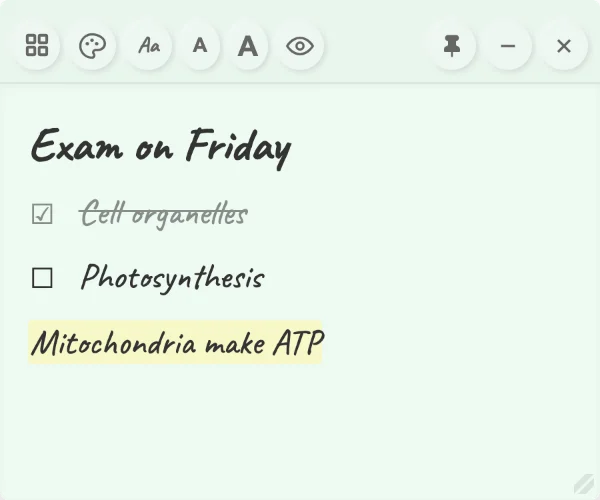
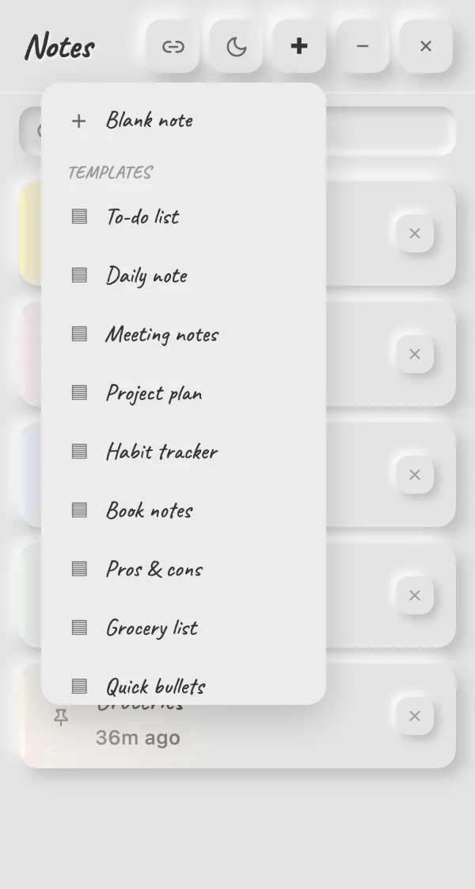
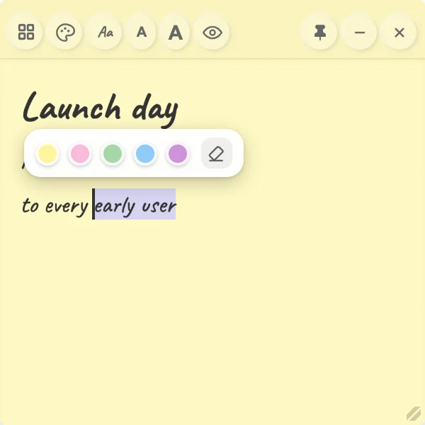
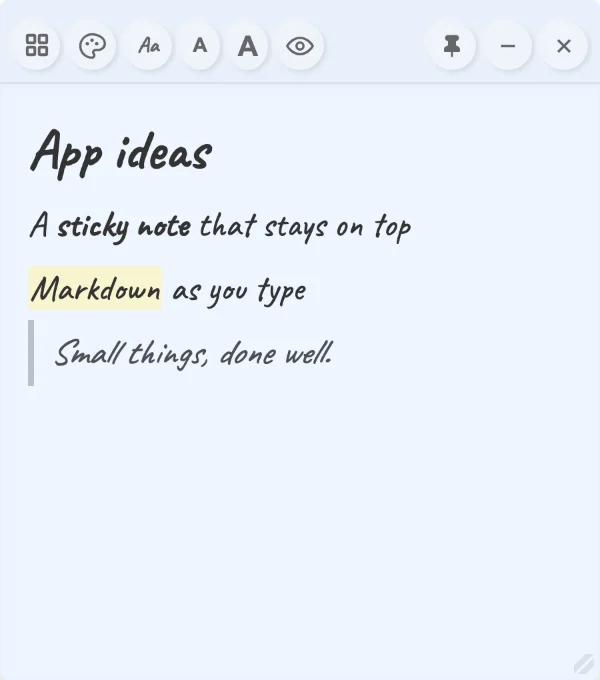
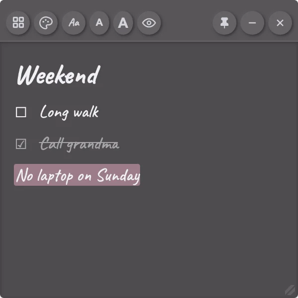
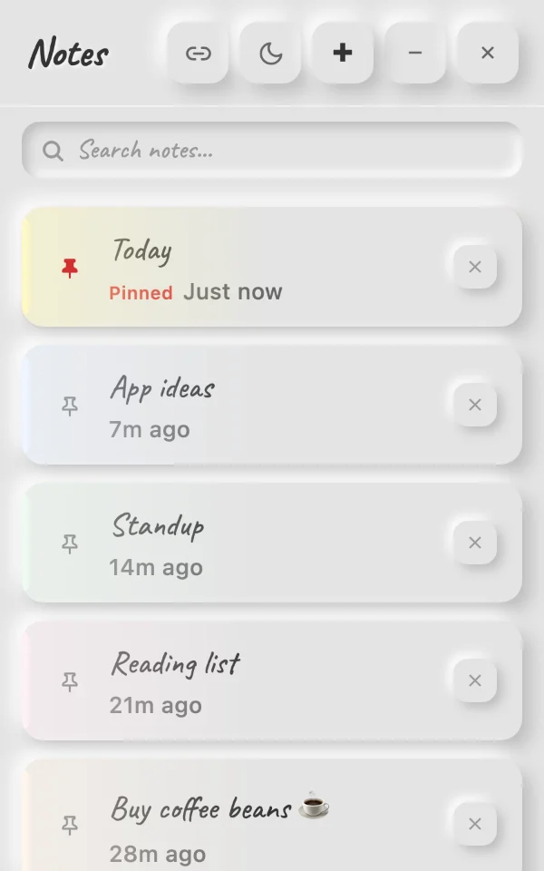

Stays on top, if you want
Notes float above your browser, editor and chats. Tap the pin on a note to let it sit behind other windows instead.

Free, open source floating notes for Windows and macOS. Write checklists, highlights and headings as you type, and keep the note above your other windows while you work.
Mac with Apple chip (M1 to M4) uses the button above. Intel Mac version
Pin Notes does one job well: a note you can always see, that is nice to write in.
Notes float above your browser, editor and chats. Tap the pin on a note to let it sit behind other windows instead.

Click + for a to-do list, daily note, meeting notes, groceries and more, or use your own templates from Obsidian.

Select any words and pick one of five highlight colours. Undo and redo work everywhere.

Pastel paper, handwriting or clean type, and a text size for every note. Each note remembers its own style.

One click turns every note dark while keeping a hint of its colour.

Search, pin favourites to the top, start from templates, and reopen any note you closed.

Yes. Pin Notes is free and open source under the MIT license. There are no ads, no account and no paid tier. The code is on GitHub.
On your own computer, in a small file in your user folder, with a backup copy kept automatically. Nothing is uploaded anywhere. If you connect an Obsidian vault, notes are also saved there as markdown files.
That message appears for apps from small developers that are not code signed yet. Click More info, then Run anyway. You can check every line of the source code on GitHub.
Windows 10 and 11, and macOS 10.15 or later on both Apple chip and Intel Macs.
Open an issue on GitHub. Feedback is very welcome.